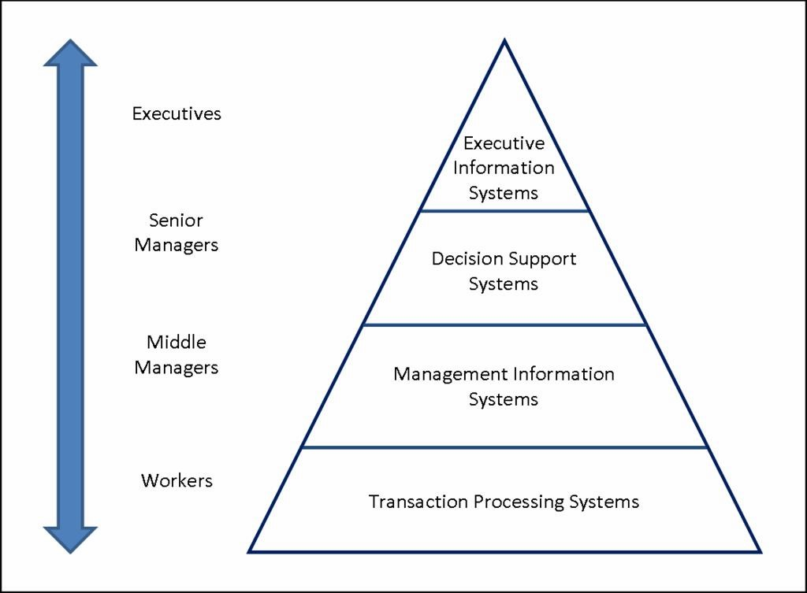
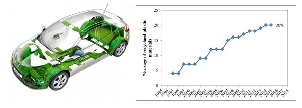

Decision system: all the human, material and software resources that make it possible to achieve the objectives through the social object.
Information system: all human resources, hardware and software that processes information for effective decision making.
Operating system: all the human resources, materials and software that realizes the social object.
In the management system (MS) of a company, decision system sometimes has ideas to develop the company, and information system (IS) has to give some supports to help decision system decide and help operating system to achieve company’s goals.
In our example, Renault’s decision system wants to increase the company’s profits in some way. Through data and case studies of IS, they suggest that recycling waste can not only reduce costs, but also help the company improve its reputation through environmental protection. With more information exchanged between the decision system and the IS, the decision system puts more specific requirements on the IS and the IS also provides more specific data for the decision system (DS) to help them make more detailed and feasible decisions.
Then they hand the plan of final solution to the operating system (OS), which implemented activities of Renault and achieved the goal through this detailed plan. There is also much information exchanged between the OS and the IS, the IS can analyze data and write some algorithms to help the OS to implement better and faster.
Now we will create a module of this MS, and we will talk more about the work of the IS.
An Information System (IS) is an organized system for the collection, organization, storage and communication of information. More specifically, it is the study of complementary networks used by people and organizations to collect, filter, process, create, and distribute data.
Any particular IS is designed to support operations, management and decision making. Information systems are information and communication technologies (ICT) used by organizations and are the way people interact with this technology to support business processes.
There are 4 levels of information system.
Tools used by Renault: Hadoop Hortonworks, Hive, HBase, SPARK, Scala, Oozie; Elastic Search.
Data Processing System (DPS) or Transaction Processing System (TPS), which collects data that can be used for management and generates reports to support the organization's working activities – MRS (Management Reporting System, the narrowly defined Management Information System MIS).
When engineers begin to design a vehicle component, recycled materials are often considered the second choice. We are worried that the quality of recycled materials will not match the original materials or that they are not qualified to be used in car production. In order to verify the feasibility of recycled materials in automobile production, Renault needs to pass a series of experiments on recycled plastics and original plastics, input and store
experimental data into a specific database. And convert this large amount of experimental data into a chart to visually see the comparison between the two.
From the experimental results, it was found that a well-recycled material can provide good results regarding the performance of the recycled material compared to the original material. When the decorative parts are made of recycled plastic (Renault Megane), the potential of recycled materials is outstanding, and the quality and function are no different from the customer. Therefore, recycled materials can be applied to automobile production on a technical level.
Having verified of the usability of recycled plastics, the IS will assist the DS to determine whether to use recycled plastics for production and the proportion of production through other indicators. These staff members in this system can also use Decision Support System (DSS) to complete their decision-making work.
Decision Support System (DSS) is an information system that supports business or organizational decision-making activities. DSS serves the organization's management, operations, and planning levels (usually mid-level and senior management) and helps people make decisions about issues that may change rapidly and are not easily specified in advance. DSS uses tools and techniques to help gather relevant information and analyze options and alternatives. DSS typically involves the use of complex spreadsheets and databases to create "what if" models.
Tools used by Renault: Hadoop Hortonworks, Hive, HBase, SPARK, Scala, Oozie; Elastic Search.
There are three fundamental components of a DSS architecture:
1. Database: Database where they store experimental data/results,
2. Model (the decision context and user criteria)
Is it worth it to use recycled plastic in car production? Which type of recycled plastic to use can be better?
Which indicators can be better used to compare these different plastics? Better mechanical and/or thermal properties…
3. User interfaces
Interface with chart, set of menus and simple comment which helps the interaction between the user and the software system.
After reading the report of data processing system, staffs in this system of Renault can start to decide in four phases:
1. Intelligence – Searching the environment for conditions that call for a decision
The decision-making process starts with Intelligence Phase, which emphasizes importance of right problem definition before building anything (product or business).
Defining organizational objectives – increase the value and profits of the business Problem identification and classification
2. Design – Inventing, developing and analyzing possible courses of action
Formulate a model for designing new solutions, or evaluation models for assessing ready- made solutions.
3. Choice – Selecting a particular course of action from those available
4. Implementation – Adopting the selected course of action in decision situation.
This system can be used for decision-making, and for the coordination, control, analysis, and visualization of information in an organization. After creating reports, extracting data, it can assist in the decision-making processes of middle and operational level managers
After many experiments and decisions, Renault has gradually determined the type of recycled plastics, the scope of application in automotive production, the amount of use, etc. The most used plastic in Renault vehicles is polypropylene (PP). For this type of material Renault develop design guidance tools in order to prevent the pollution of the polypropylene with parasite polymers of equal density and incompatible materials present into the polypropylene process (PVC, glued textiles, metallic inserts etc.).
Their experiments and such decision-making processes has never stopped, and they are committed to find better solutions. Through the chart, we can see that the percentage of recycled plastic used by Renault for automobile production is increasing year by year.
Parts in recyclable and renewable plastic material for Renault Megane vehicle and Evolution of the recycled materials used on Renault cars
Thanks to this idea, Renault has succeeded in reducing the cost and getting a good reputation for the environmental protection.